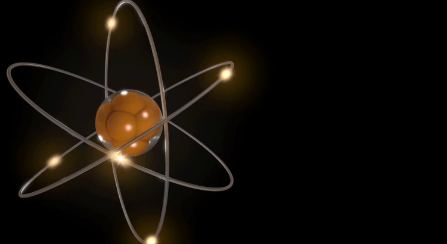
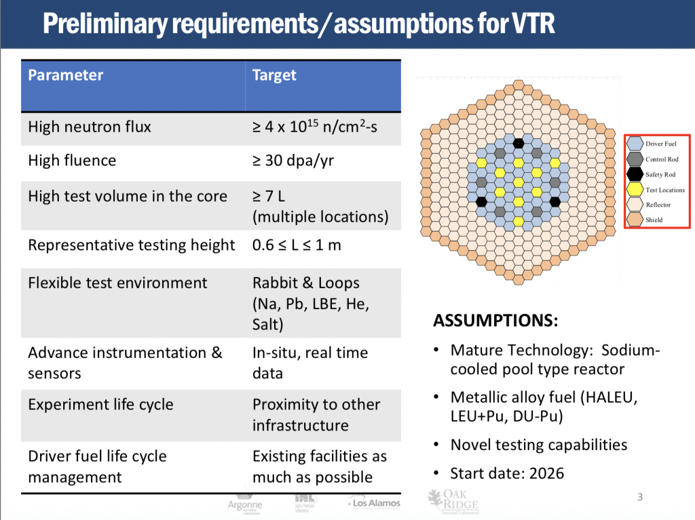
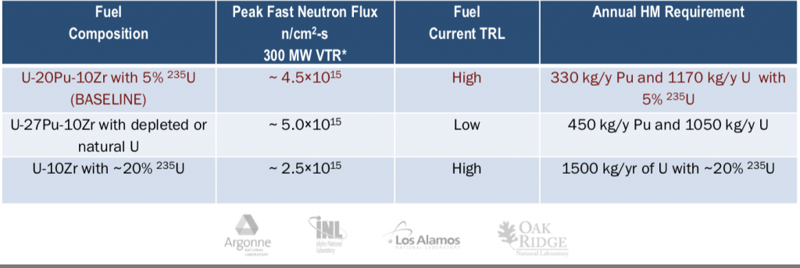
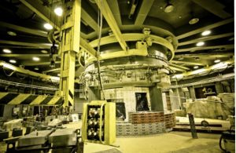

USA vs Russia – The Next Generation Nuclear Race
The US Department of Energy (DOE) announced open hearings on the environment impact assessment regarding the construction of a Versatile Test Reactor (VTR).The project announcement was originally made by Secretary of Energy Rick Perry on February 28, 2019, with a tentative completion date of 2026.Dr. Kemal Pasamehmetoglu is a nuclear engineer and the executive director of the Versatile Test Reactor Project at the Idaho National Laboratory.GE-HITACHI is the subcontractor for the design support.
The US has not upgraded its nuclear facilities in over 20 years and currently does not have a modern fast neutron-spectrum testing facility.The next generation reactors are needed in order to regain global leadership and to counter Russia’s technology.One of the main missions of the DOE is the nuclear security of the United States.A main strategic purpose for the VTR is to enable the optimized use of nuclear energy for domestic markets and to secure the country’s global and scientific leadership.
Public input hearings will be held this month, including webcast meetings on August 27-28 and the process set to close on September 4th.
The VTR capabilities include:
The US is still using technology from the 1980s, which would be comparable to a BOR-60 fast neutron reactor in Russia.It is one of the key experimental facilities globally for the performance of the large-scale tests of fuel.It has been in operation since 1969 (during the Soviet Era) and continues to be in operation despite being scheduled for shut down in 2014.
Russia is currently building a next generation, world’s most powerful, MBIR sodium cooled fast reactor with the involvement of the N.A. Dollezhal Scientific Research and Design Institute of Electrical Power Engineering Technology in Dimitrovgrad.
It is on track for completion by 2020.The MBIR is a 150 MWt sodium-cooled fast reactor and will have a design life of up to 50 years.It will be a multi-loop research reactor capable of testing lead, lead-bismuth and gas coolants, and running on MOX (mixed uranium and plutonium oxide) fuel.NIIAR (Rosatom State Atomic Energy Corporation) intends to set up on-site closed fuel cycle facilities for the MBIR, using pyrochemical reprocessing it has developed at pilot scale.
The major difference between the two reactors is that MBIR is designed for the traditional uranium oxide petroleum and VTR is designed for the metallic alloy fuel.The metallic alloy fuel can produce a higher neuron stream vs oxide, but oxide is ceramic and has withstood the capabilities of the nuclear expansion.Nevertheless, metallic alloy reactor fuels are gaining large interest.
Currently, Russia is the world leader with a 22% global market share of nuclear installations using Rosatom State Atomic Energy Corporation designs.Thus far, over 600 research reactors have been constructed.
It will be fascinating to observe the nuclear race between the US and Russia over the next two decades.
[bsa_pro_ad_space id=4]
Share on Facebook Tweet Follow us
Posted On: 2019-08-10T00:00:00
Posted By: Christina Kitova







Content Date: 2019-08-10
Download Date: 2021-07-09
Document ID: L0C04EPKC